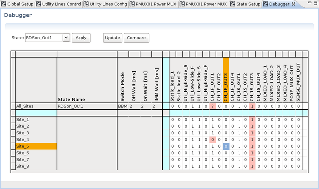

Routing Tools - Debugger
The Debugger allows you interactively loading and applying stored setups or modifying the active setup of the hardware.
- Apply a state that has been defined in the State Setup editor,
- show the actual state of all switches and utility lines and
- modify the state of each single switch or utility line.

State setup table
The table is divided into two sections:
-
All_Sites row: The uppermost row shows the common state for all sites. Settings that are different for the sites are shown as question mark "?". Modifications in the uppermost row are applied to all sites.
-
Site_# rows: These rows show the state per site. A modification in one of these rows is applied only to the related site.
The current edit position in the table highlighted orange in the sites column and in the header row. The light-blue row and column allow you entering filters for the rows and columns.
The shown switch states are defined as follows:
- 0: The channel is inactive:
- Utility line open collector output is off
- PMUX switch is open
- 1: The channel is active:
- Utility line open collector output is on
- PMUX switch is closed
- ?: The actual state is different on the sites. This switch is used only in the uppermost All_Sites row.
State drop-down list and "Apply" button
The setups that have been defined using the State Setup editor can be selected from the State drop-down list and applied to the hardware by clicking the Apply button.
"Update" button
"Compare" button
Clicking the Compare button compares the state that has last been read using the Update button and the current state in the state setup table. Differences to the last read state are highlighted light-red.
Context menus
There is a context sensitive menu available after clicking the right mouse button. The two functions Copy and Paste operate on the selected cell or on a range of cells.
- Copy will copy the marked data to the clipboard.
- Paste will insert data from the clipboard.
Functional changes
- Introduced in SmarTest 7.5.1